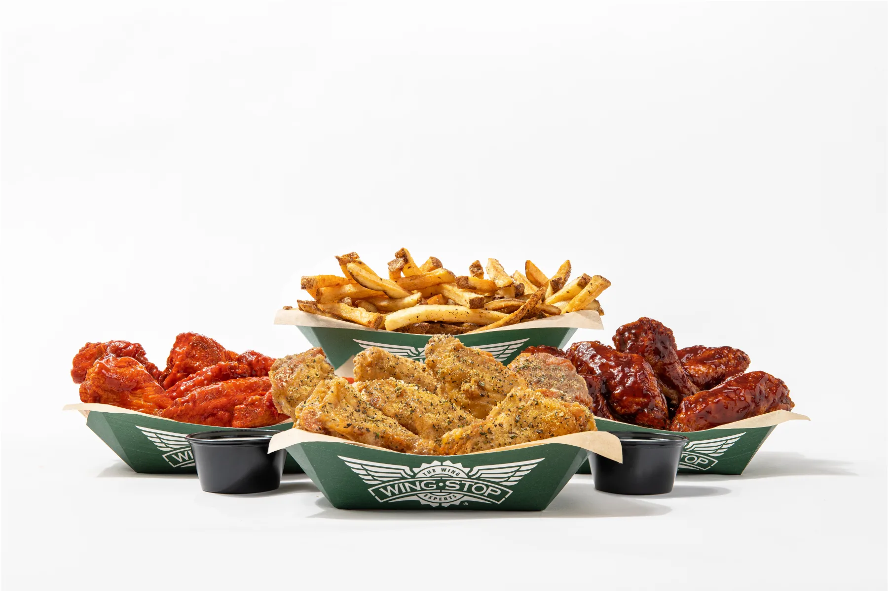
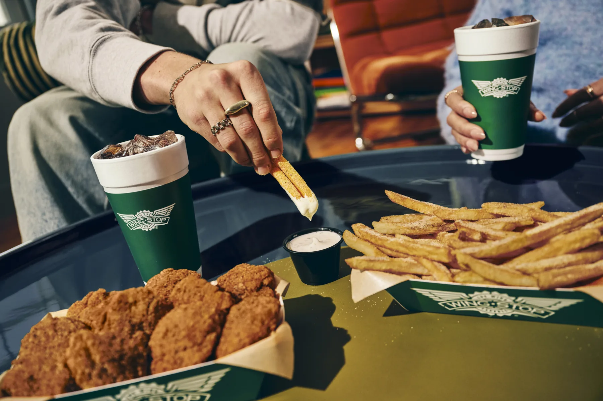
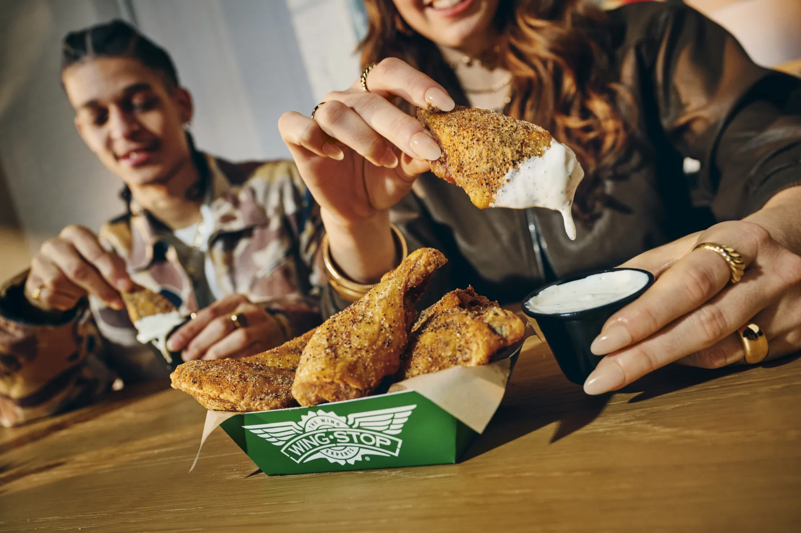
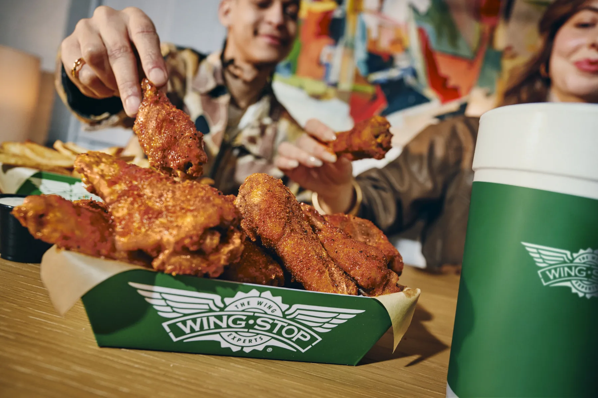

ORDERING GUIDE
The Best Wingstop Combo: How to Build the Perfect Order

Wingstop looks easy until the ordering screen asks six questions at once. Classic or boneless? Eight or ten pieces? Which flavors belong together? Which side is worth ordering? A good combo answers those questions as one meal instead of treating every menu choice separately.
This article was written from a blank page using Wingstop's current menu descriptions, published nutrition and allergen information, and practical portion and flavor comparisons. It does not claim a restaurant taste test. Prices, flavors and substitutions can vary, so confirm the final order in your selected restaurant's live cart.
Key Takeaways
- Ten classic wings are the strongest full-meal starting point.
- One dry seasoning plus one wet sauce creates the best contrast.
- Lemon Pepper and Original Hot are the safest first pairing.
- Louisiana Voodoo Fries are the side for sharing; regular fries suit a balanced solo meal.
- Keep Atomic or another extreme-heat flavor to a smaller labeled batch.
- Use the local cart for current prices, flavor limits and substitutions.
How Many Wings Do You Actually Need?
Ten wings make sense when chicken is the main event. The count divides cleanly into two five-piece flavors, which is enough to understand both choices. Eight wings work when loaded fries or another substantial side will carry part of the meal. Six pieces fit a lighter lunch, but dividing six between two flavors can make each half feel like a sample.
For two people, compare 15 to 20 wings with a shared side against two individual combos. For groups, seven to 10 wings per person is a practical planning range rather than a guarantee. Appetite, children and the number of sides can move the total in either direction.
Classic or boneless?
Classic wings are my default because skin creates stronger texture and gives dry seasonings a distinct surface. Boneless wings are easier to share and their breading holds wet sauces evenly. Boneless pieces contain wheat, while classic wings are described by Wingstop as unbreaded. Shared fryers and sauce ingredients still matter, so use official allergen information for allergy decisions.

The Best Wingstop Flavors Ranked for Mixing
The best pairing is not simply the two loudest names on the menu. Two sweet sauces become repetitive. Two rich savory flavors can make the box tiring. A dry flavor and a wet flavor usually work because texture changes along with taste.
Lemon Pepper + Original Hot
Lemon Pepper is dry, bright and peppery. Original Hot is saucy, tangy and warm. Each wing resets the other, making this the clearest first order for someone who wants to understand the menu rather than chase maximum heat.
Lemon Pepper + Garlic Parmesan
This is the mild pairing for unknown spice tolerance. Citrus and pepper keep one half lively, while garlic, cheese and richness define the other. Use regular fries or Cajun Fried Corn instead of adding another heavy cheese-topped side.
Hot Honey Rub + Louisiana Rub
Hot Honey Rub supplies sweetness and gentle warmth; Louisiana Rub moves toward savory Cajun seasoning. Both are dry, which makes the pairing practical for takeout. Confirm Hot Honey Rub is available locally before building the order around it.
Mango Habanero + Lemon Pepper
Mango Habanero begins sweet and builds into stronger heat. Lemon Pepper gives the palate a clean break between those wings. Pairing Mango Habanero with another sweet sauce removes that contrast.

What I Do Not Recommend
Skip Mango Habanero with Hickory Smoked BBQ when contrast is the goal because both lean sweet. Avoid a full first-time order of Atomic; keep it separate and smaller so its heat does not erase every flavor afterward. Garlic Parmesan wings beside heavily loaded cheese fries are another poor match because the entire meal lands on the same rich note.
The Sides That Actually Make the Order
Louisiana Voodoo Fries are the decisive shared side. Cajun seasoning, cheese sauce and ranch make them substantial enough to feel like their own menu item. Regular seasoned fries are the better solo choice when the wings should remain the focus.
Cajun Fried Corn is the strongest alternative to fries. It adds seasoning and texture without another pile of potatoes and should hold up better on a longer drive. Veggie sticks are less exciting, but they perform a useful job beside Mango Habanero or Atomic by adding cold crunch.
Ranch is the flexible dip for a mixed box. Two cups are reasonable for 10 wings plus fries. Bleu cheese gives Original Hot a sharper partner, while honey mustard fits plain or lightly seasoned tenders better than a mixed wing order.
The Group Order Strategy
A group order should cover the heat spectrum. Give the largest share to Lemon Pepper or Garlic Parmesan, a second share to Original Hot or Louisiana Rub, and the smallest clearly labeled share to Mango Habanero or Atomic. That plan gives cautious diners a real meal without removing heat from the table.
For four people, start around 30 wings and adjust for appetite and sides. Three flavors are enough. Too many tiny batches complicate packaging and leave everyone with only a few pieces of each choice. Separate classic and boneless wings when preferences differ, and keep wet flavors in their own containers when possible.
Let one person build the final cart after collecting preferences. That person should verify the restaurant, wing count, flavor split, sides, dips and pickup time. Pickup also makes large orders easier to check and often avoids the fees and longer travel time attached to delivery.

The Complete Best Order Breakdown
The Solo Order
10 classic wings: five Lemon Pepper and five Original Hot. Add regular seasoned fries or Louisiana Voodoo Fries, two ranch dips and a drink. Drop to eight wings for a lighter appetite.
The Date Night Order
15 classic wings: Lemon Pepper, Garlic Parmesan and Original Hot when the local flavor limit permits three choices. Add Louisiana Voodoo Fries to share, Cajun Fried Corn and three dips. The spread covers bright, rich and hot without forcing either person to commit to one flavor.
The Group Order for Four
30 wings: 10 Lemon Pepper, 10 Original Hot and 10 Mango Habanero, all clearly labeled. Add two shareable sides, Cajun Fried Corn and at least six dips. Split classic and boneless pieces only when the group requests both formats.
Pickup and delivery adjustment
Wet sauces soften during a long trip, while dry seasonings travel with less mess. Fries lose texture first as steam builds inside the box. For a longer drive, keep at least half the wings dry and consider Cajun Fried Corn instead of fries. Check every flavor container, dip, side and drink before leaving.
Build the order in this sequence
- Choose the piece count.
- Select classic or boneless.
- Pick one dependable anchor flavor.
- Add a contrasting second flavor.
- Choose a side that does not repeat the richest wing flavor.
- Add enough dip for the food and number of people.
- Review the store, final price, fees and pickup or delivery time.
Conclusion
Start with 10 classic wings split between Lemon Pepper and Original Hot. Add Louisiana Voodoo Fries when sharing or regular seasoned fries for a more balanced solo meal, then get two ranch dips. The winning formula is two flavors with real contrast, a side that adds something new and a portion matched to the people eating it.
FAQ
What is the best Wingstop combo?
Ten classic wings split between Lemon Pepper and Original Hot, Louisiana Voodoo Fries and two ranch dips are the best all-around starting order.
How many Wingstop wings should I order per person?
Start with 10 for a full solo meal, eight with loaded sides and six for a lighter lunch. Groups can begin around seven to 10 per person and adjust for appetite.
What flavors work well together?
Lemon Pepper and Original Hot provide the strongest contrast. Lemon Pepper and Garlic Parmesan suit a mild order, while Mango Habanero and Lemon Pepper combine heat with a dry reset.
What are Louisiana Voodoo Fries?
They are seasoned fries topped with Cajun seasoning, cheese sauce and ranch. Their richness makes them best suited to sharing.
Should I order classic or boneless wings?
Choose classic for skin and texture contrast. Choose boneless for easy sharing and breading that holds sauce. Review official allergen information when dietary safety matters.
Is pickup better than delivery?
Pickup usually gives better control over fees, travel time and fry texture. Compare the complete checkout totals when delivery is more convenient.